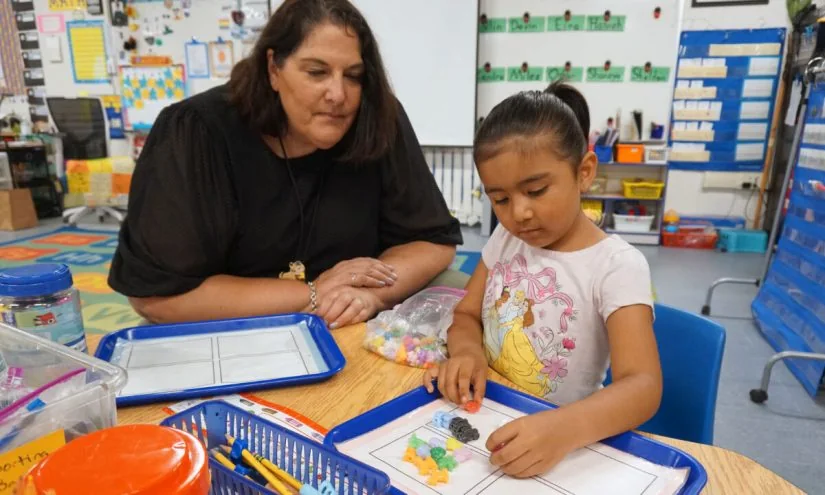

01
院士受聘地方高校：顶尖人才下沉，是信号还是常态？
一位中国科学院院士受聘于地方高校，这则简短消息背后，是高等教育资源再分配的长期趋势。

今天，学术桥发布消息，一位中国科学院院士受聘于某地方高校。具体是哪所高校、院士的研究领域，报道没有展开，但“院士”与“地方高校”的组合，本身就值得琢磨。过去，院士几乎都集中在顶尖研究型大学或国家级科研院所，地方高校很难吸引这样级别的人才。如今这类消息越来越多，背后是政策推动和高校自身发展的双重逻辑。
对地方高校的学生来说，这意味着有机会接触到更顶尖的师资和科研资源。过去，他们可能要去大城市才能听一场院士讲座，现在可能就在本校课堂上。但也要看到，院士受聘的形式可能是兼职、短期讲学或建立工作站，并非全职扎根。所以，学生能获得的实际收益，取决于学校如何利用这些资源。
对家长和考生而言，这类消息可以作为择校的参考，但不宜过度解读。一所高校的水平，最终要看整体师资、教学质量和毕业生发展。院士是锦上添花，不是全部。
如果你是一名地方高校的学生，可以主动关注学校官网和学术活动通知，争取参加院士的讲座或座谈。即使只是旁听，也能开阔眼界。如果你正在填报志愿，不妨查一查目标院校近年是否有高层次人才引进，这通常是学校发展的积极信号。
伊恩的观察
顶尖人才下沉是趋势，但普通学生要做的，是主动抓住这些新出现的机会。
02
深圳学生“玩转AI”：从导航系统到机器人，中小学AI教育在做什么？
深圳一所学校的学生研发导航系统、手工制作机器人，这不仅是科技活动，更是AI教育在中小学落地的缩影。
图片来源：finance.sina.cn ·
查看原图新浪网报道，深圳一所学校的学生研发了导航系统，还手工制作了机器人。报道没有给出学校名称和具体项目细节，但这类新闻近年来并不少见。深圳作为科技创新前沿，中小学AI教育起步较早，很多学校开设了编程、机器人、人工智能等课程，学生作品屡屡获奖。
这背后是政策的推动。教育部早就提出在中小学设置人工智能相关课程，逐步推广编程教育。但落地情况因地区、学校而异。深圳的学校有资源、有师资、有企业支持，所以能做出成果。而中西部很多学校，可能连基本的电脑设备都不足。
对家长来说，看到这类新闻容易焦虑，担心自己的孩子输在起跑线上。但冷静想想，AI教育的目的不是让每个孩子都成为程序员，而是培养计算思维、解决问题的能力和创新意识。这些素养，通过简单的编程游戏、逻辑训练也能培养。
如果你所在学校没有开设AI课程，可以自己找资源，比如免费的编程平台、在线课程。也可以从生活中的问题出发，比如用简单的传感器做一个自动浇花装置。关键是动手实践，而不是追求高深技术。
伊恩的观察
AI教育的核心是思维培养，资源不足时，从身边小项目开始，同样能收获成长。
03
AI黑板造价几何？普通学校用得起吗？
AI黑板进入课堂，但价格是道门槛。本文探讨其成本与教育公平的平衡。
新浪网提出一个现实问题：中国AI黑板的造价高不高，普通学校能否用得起？AI黑板通常集成了大屏显示、触控交互、AI分析等功能，能实时反馈学生答题情况、自动生成课堂报告。听起来很美好，但价格不菲。据行业信息，一块AI黑板的价格可能在数万元到十几万元不等，对经费有限的学校来说，是一笔不小的开支。
目前，AI黑板主要出现在发达地区的示范校或实验校。对于普通学校，尤其是农村学校，普及还遥遥无期。这加剧了教育数字化的鸿沟：有钱的学校用AI赋能教学，没钱的学校还在用粉笔黑板。
但价格高不代表普通学校完全无缘。一些地方政府通过集中采购、租赁等方式降低成本。另外，AI黑板的核心功能，部分可以用普通投影仪加免费教学软件实现。所以，学校在采购时，应该根据实际需求选择，不必盲目追求高端。
对老师来说，即使没有AI黑板，也可以利用手机、平板等设备进行互动教学。技术是辅助，教学设计和师生互动才是根本。对于家长，不必因为学校没有AI设备而焦虑，孩子的学习效果更多取决于教师的用心和家庭的配合。
伊恩的观察
技术是教育的工具，不是衡量教育质量的标准。普通学校可以用低成本的替代方案，关键在用好现有资源。
04
美国俄克拉荷马州犹太特许学校诉讼：宗教与公立教育的边界之争
一所犹太特许学校被拒后起诉州政府，这场官司可能影响美国其他州的宗教教育政策。
据The 相关数量报道，美国俄克拉荷马州一所拟建的犹太特许学校的创始人，将于本周三在联邦法院出庭，争取推翻州特许学校委员会拒绝其申请的决定。该学校由前民主党国会议员Peter Deutsch领导，今年3月起诉州委员会，认为州法律要求特许学校必须是非宗教性的，这构成了宗教歧视。
特许学校是美国的一种公立学校，接受公共资金，但由私人运营，通常有更大的自主权。传统上，特许学校必须是非宗教的。但这所学校想提供基于犹太信仰的教育，因此被拒。代表学校的贝克特基金会律师表示，许多家长希望孩子接受严格的、基于信仰的教育。
这场诉讼如果胜诉，可能为宗教特许学校打开大门，影响其他州的类似案例。但反对者担心，这会模糊政教分离的界限，甚至导致公共资金流向宗教机构。
对普通家庭来说，这关系到教育选择权。支持者认为，家长有权为孩子选择符合自己价值观的教育；反对者认为，公立教育应该保持世俗性，避免宗教分歧。在中国，我们实行教育与宗教分离的原则，公立学校不开展宗教教育。但了解这一案例，有助于我们思考教育多样性与公共资源分配的关系。
伊恩的观察
教育选择与公共资金的使用，永远需要在多元价值和公平原则之间寻找平衡。
05
加州四岁娃英语测试改革：用游戏代替考试，让测评不再吓哭孩子
加州批准了两种新的语言筛查工具，用游戏和故事测试四岁孩子的英语水平，替代了让幼儿害怕的旧考试。

加州教育部今年春季批准了两种新的语言筛查工具，用于过渡性幼儿园（TK）的英语能力测评。此前，所有在家不说英语的K-12学生，入学30天内都要参加ELPAC考试。但老师和倡导者反映，一些英语流利的TK学生因为年龄太小、不熟悉考试形式，被误判为英语学习者。考试过程甚至吓哭了孩子。
新工具采用游戏和故事的形式，让孩子在轻松的氛围中展示语言能力。这不仅能减少孩子的焦虑，也能更准确地反映他们的真实水平。
这一改革对教育公平有积极意义。它避免了因测评方式不当而给孩子贴上“英语学习者”的标签，从而影响后续的教育安排。同时，它也提醒我们，测评工具的设计必须考虑年龄特点。
在中国，类似的低龄测评也存在。比如一些幼儿园的“面试”或“测试”，可能让孩子紧张。家长可以关注孩子的情绪反应，如果测评方式让孩子不适，可以向老师或学校反映。更重要的是，家长不要因为一次测评结果而焦虑，孩子的成长是动态的。
对于教育者，这一案例提示我们，测评的目的是为了支持学习，而不是筛选。设计适合年龄的测评方式，是教育专业性的体现。
伊恩的观察
测评应服务于孩子的成长，而不是制造焦虑。适合年龄的测评方式，才能得到真实的结果。
无障碍文字记录
伊恩 你好，欢迎收听伊恩每日·教育，我是伊恩。今天想从一条你可能没太注意的新闻说起：中国科学院院士，受聘了一所地方高校。听起来就是个人事变动，但背后藏着一个大趋势——顶尖人才正在往基层流动。今天还有深圳学生自己研发导航系统、AI黑板成本讨论、美国俄克拉荷马州的宗教特许学校官司，以及加州四岁孩子的英语测试改革。这些事发生在不同国家、不同学段，但都指向同一个问题：教育公平和高质量，能不能同时实现？我们一个一个来看。
伊恩 今天想和你聊一个新闻，标题很短，但信息量不小：中国科学院院士，受聘地方高校。消息来自学术桥，具体是哪位院士、去了哪所高校，报道里没有细说，但这件事本身，值得琢磨。
过去，院士几乎都集中在顶尖研究型大学，地方高校想请一位，难度很大。现在这种情况越来越多，说明人才流动的通道在打开。对地方高校的学生来说，这意味着有机会接触到最前沿的科研思维，但也要注意，院士来了不等于教学质量立刻提升，关键看有没有配套的团队和资源。
为什么这么说？因为一位院士能带来的，不只是个人智慧，还有他的团队、项目、行业联系，甚至经费。如果这些没有跟着落地，那可能只是一场讲座、一个挂牌，学生实际受益有限。反过来，如果学校真的围绕院士搭建了实验室、招了年轻教师、开了新课程，那影响就是深远的。
对家长来说，选学校时不妨多关注这类动态，但别只看头衔。一个院士的加盟，是信号，但不是全部。更值得看的，是学校有没有把这件事变成制度化的投入，比如持续引进人才、改善科研条件、增加学生参与项目的机会。
对正在读书的你，如果学校来了这样的大咖，别只停留在听讲座。主动去了解他的研究方向，看看有没有本科生能参与的项目，哪怕只是打打下手。这种经历，比多修一门课更难得。
说到底，人才流动是好事，但真正的受益者，是那些能把资源转化为成长机会的学生。希望你能抓住这样的机会，也保持清醒，别被头衔晃了眼。
听众 伊恩，院士去地方高校，会不会只是挂个名，实际学生根本见不到？
伊恩 你的担心很有道理。确实存在挂名不干活的情况，但也要看具体聘任方式。有的院士是实职，会带团队、开课、指导研究生；有的只是顾问，偶尔来做个报告。建议你去看学校官网的新闻，注意措辞——是“全职引进”还是“柔性引进”，是“讲席教授”还是“名誉教授”。另外，可以查查院士团队有没有其他成员常驻，如果只有一个人，那大概率是象征意义大于实际。
伊恩 今天想和你聊聊深圳一所学校的学生，他们研发导航系统、手搓机器人，把AI玩出了新花样。新闻标题很热闹，但我想拆开看：这背后到底是什么在起作用，以及对我们普通家庭有什么启发。
先陈述事实。根据新浪网的报道，深圳这所学校的学生确实做出了导航系统和机器人。但报道没有提供更多细节，比如具体是哪个学校、什么年级、用了什么技术。所以，我们只能基于“项目式学习”这个常见模式来理解。
项目式学习的核心，不是让孩子造出多厉害的东西，而是让他们经历一个完整的问题解决过程：从需求分析，到设计，到测试，再到迭代。比如，做一个导航系统，孩子得先想清楚“给谁用、解决什么问题”，然后设计路线算法，再在真实环境中测试，最后根据反馈调整。这个过程，锻炼的是拆解问题、动手实践、抗挫折的能力，这些恰恰是AI时代最稀缺的。
但这里有个现实问题：深圳的学校有资源、有企业支持，普通学校怎么办？其实，低成本的替代方案很多。比如，用开源硬件（像Arduino）加几个传感器，就能做一个简易导航小车；用纸板、乐高也能搭出机器人原型。关键在于，老师愿不愿意放手让学生试错。项目式学习最怕的是“老师全程指导，学生照着做”，那就变成了手工课，失去了思考的空间。
如果你家孩子学校没有这类活动，也不用焦虑。你可以鼓励孩子参加校外科创比赛，或者在家用编程套件（比如Scratch、Micro:bit）做小项目。哪怕只是让孩子拆一个旧玩具，研究它的结构，也是一种学习。
但我想提醒你，别把这件事变成新的焦虑来源。项目式学习不是“别人家的孩子”的专利，它本质上是一种思维方式。你可以从今天开始，问孩子一个问题：“你最近有没有想解决的小麻烦？”然后陪他一起想办法。哪怕只是用纸板做个手机支架，也是在经历完整的问题解决过程。
长期来看，这种能力比背多少知识点都重要。因为AI能替代知识检索，但替代不了“发现问题、定义问题、解决问题”的创造力。而公平性在于，这种能力不依赖昂贵设备，它依赖的是家长和老师的引导。所以，别被“深圳学校”的光环吓到，每个孩子都有机会。
希望今天的分享对你有帮助。我是伊恩，我们明天见。
伊恩 今天聊一个很多家长和老师都在问的问题：AI黑板到底贵不贵，普通学校用不用得起？新浪网有报道，公众在讨论中国AI黑板的造价。先摆事实：AI黑板不是一块普通的电子屏，它集成了交互显示、AI分析、云资源这些功能，所以价格确实不便宜。但贵不贵，要看你怎么算这笔账。
如果学校买回来只是当投影仪用，播放PPT，那它和普通设备没区别，钱就白花了。但如果老师能利用AI实时分析课堂互动，自动生成学情报告，那长期看，它可能帮老师省下大量批改和统计的时间，这些时间成本也是钱。
不过，现实里很多学校买了设备却闲置，原因很简单：老师不会用，或者没有时间学。设备是新的，教学方式还是老的，AI黑板就成了摆设。所以，比采购更重要的，是教师培训。学校得先教会老师怎么用，让技术真正进课堂，而不是进仓库。
作为家长，你可以观察孩子学校有没有真正在用这些设备。比如，老师上课时会不会用AI出题、分析学生掌握情况，还是只是把黑板当普通屏幕。如果只是摆设，那学校在采购上可能欠考虑，你可以向学校反映，建议把培训放在首位。
说到底，AI黑板是工具，不是魔法。它能不能提升教学，取决于用的人。对普通学校来说，与其追求最新最贵的设备，不如先把现有资源用好，把老师培训到位。技术是为人服务的，别让硬件成了新的负担。希望每个孩子都能在真正有用的课堂里学习，而不是对着冰冷的屏幕。
听众 AI黑板会不会让老师失业？以后是不是都用AI上课了？
伊恩 这个问题很多人问。AI黑板再智能，也只是工具，它无法替代老师的情感支持和价值引导。比如，一个孩子情绪低落，AI能察觉吗？能，但不知道怎么安慰。老师的作用是理解、鼓励、因材施教。AI可以帮老师批改作业、分析数据，但最终决策还是要老师来做。所以，老师不会失业，但会转型——从知识的传授者变成学习的引导者。家长也不用担心，AI只是让课堂更高效，但教育的温度，还是来自人。
伊恩 今天想和你聊一件发生在美国的事，它看起来离我们很远，但背后的问题，可能和你我都有关系。
俄克拉荷马州有一个拟议中的犹太特许学校，叫“国家本·甘拉犹太特许学校基金会”，由前民主党国会议员彼得·多伊奇领导。今年3月，他们起诉了州特许学校委员会，因为委员会拒绝了他们的申请。拒绝的理由是，俄克拉荷马州法律规定，特许学校必须是非宗教性的。而创办方认为，这条法律构成了宗教歧视，他们想要提供一种“严格的、基于信仰的教育”，很多犹太和非犹太家长都想要这样的学校。
这个案子，这周三在联邦法院开庭了。而且，不只是俄克拉荷马州，其他州也在关注这个案件。
先解释一下背景。特许学校在美国是一种用公共资金运营的独立学校，它和传统公立学校不同，有更大的自主权，可以自己设计课程和教学方法，但也要达到一定的学术标准。通常，特许学校是非宗教的，这是为了确保公共资金不会用于支持任何特定的宗教信仰。
现在，这个犹太特许学校的案子，挑战的正是这一点。如果法院裁定，宗教学校也可以获得公共资金，那可能会打开一个口子，让各种宗教团体都能申请公共资金办学。这会带来一系列问题：公共资金是否应该支持宗教教育？会不会导致不同信仰群体之间的紧张？会不会加剧教育分化？
这个案子最终可能打到最高法院。对普通家庭来说，这意味着学校选择的多样性可能会变化，但也可能加剧教育分化。
我的看法是，这件事的核心，其实是公共资源的边界问题。教育是公共产品，它应该服务于所有孩子，而不是某一部分群体。如果公共资金流向宗教学校，那可能会让教育资源更加不均衡，让不同信仰、不同背景的孩子更难在同一个空间里学习和理解彼此。
当然，我也理解那些想要宗教教育的家长，他们希望孩子能在一个和自己价值观一致的环境里成长。但问题是，公共资金应该保持中立，不能偏向任何宗教。
这个案子还在进行中，结果如何，我们不知道。但我们可以思考的是，当我们谈论教育公平的时候，我们到底在谈论什么？是让每个孩子都能获得同样的资源，还是让每个孩子都能获得适合他们的教育？这两者之间，往往需要平衡。
希望这个案子能引发更多关于教育公共性的讨论。毕竟，教育不只是个人的事，它关乎整个社会的未来。
伊恩 今天想跟你聊一个关于四岁孩子考试的故事。它发生在加州，但我觉得它对我们每个人都有启发。
先讲事实。加州教育部门今年春天批准了两个新的语言筛查工具，用来测试四岁孩子的英语能力。这两个工具的特点是：用游戏和故事来测，目的是不让孩子哭。
为什么要换？因为之前的测试方式出了问题。加州有一项法律，所有在家不说英语的孩子，入学30天内都要参加一个叫ELPAC的考试，用来判断他们的英语水平。但问题来了：很多四岁的孩子，明明英语很流利，却因为年龄太小、不适应考试形式，被误判为“英语学习者”。
这个标签一旦贴上，孩子就可能被安排进额外的英语辅导，占用本该用来玩耍和社交的时间。更糟糕的是，有些孩子因为考试经历而害怕上学。
你可能会问，四岁的孩子需要考试吗？这正是问题的核心。低龄儿童的认知发展特点决定了，他们很难理解“考试”这个概念，更别说在陌生人面前展示语言能力了。他们可能会因为紧张、害羞，或者单纯不想配合，而表现得比实际水平差。
所以，这次改革的意义在于：它承认了评估方式本身会影响评估结果。如果测试让孩子感到害怕，那测出来的就不是真实水平，而是孩子的恐惧。
这对我们普通人有什么启发？我想有三点。
第一，如果你是家长，孩子被贴上“学习困难”或“语言落后”的标签时，先别慌。先问一句：这个评估是在什么情境下做的？孩子当时的状态如何？如果孩子是在紧张、害怕的情况下被评估的，那结果可能就不准确。你可以主动和学校沟通，要求重新评估，或者要求用更温和的方式观察孩子。
第二，我们要警惕“标签效应”。一个标签一旦贴上，就可能成为孩子自我认知的一部分。孩子会想：“我就是英语不好”，然后真的越来越不好。所以，无论是老师还是家长，在给孩子下结论之前，要多观察、多等待。
第三，这件事也提醒我们，教育中的“方法”和“目的”要匹配。我们测试孩子的英语，目的是为了帮助他们，而不是为了筛选和分类。如果方法伤害了孩子，那这个方法就需要改变。
加州的这次改革，看起来只是换了个考试工具，但背后是对儿童发展规律的尊重。它告诉我们，好的教育评估，应该是让孩子感到安全、被接纳的。
最后，我想对你说：如果你身边有孩子正在经历类似的评估，请记得，一次测试不能定义一个人。孩子的成长是动态的，我们要用发展的眼光去看待他们。
这就是今天的故事。我们明天见。
听众 伊恩，我家孩子四岁，也遇到类似情况，被学校说英语不好，我该怎么办？
伊恩 别着急。首先，你可以向学校申请查看评估的具体内容和结果，了解孩子是哪些方面被判定为需要支持。其次，可以要求学校提供更全面的评估，比如观察孩子在自然状态下的语言使用，而不是单凭一次测试。第三，如果孩子确实需要支持，那也不是坏事，学校会提供额外的语言辅导。但你要注意，不要让孩子感到被贴标签，多鼓励他，保护他的自信心。加州的新政策也说明，评估方式正在变得更科学、更人性化，你可以关注当地教育部门的最新指引。
伊恩 今天这五条新闻，表面上各不相同，但有一条暗线：教育系统正在努力让公平和高质量兼得。院士去地方高校，是把优质资源往下沉；深圳学生的项目式学习，是让学习更有意义；AI黑板的讨论，是技术如何真正服务教学；宗教特许学校争议，是公共资源的边界在哪里；加州的测试改革，是让评估更人性化。对我们普通人来说，这些新闻不是茶余饭后的谈资，而是可以转化成行动的信息。比如，关注学校是否真的在用资源，参与家长委员会，了解孩子的评估方式是否合理。教育公平不是等来的，是每一个选择推动的。
伊恩 好了，今天的内容就到这里。如果你对今天的任何话题有想法，欢迎在评论区留言，我会尽量回复。教育不是一场冲刺，而是一段长跑，我们一起慢慢来。我是伊恩，明天见。